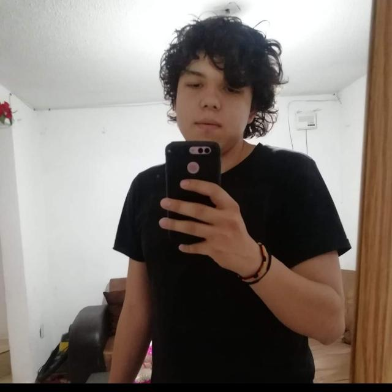

<ion-header [translucent]="true">
  <ion-toolbar>
    <ion-title>
      Mi primera app 
    </ion-title>
  </ion-toolbar>
</ion-header>

<ion-content [fullscreen]="true">
  <ion-header collapse="condense">
    <ion-toolbar>
      <ion-title size="large"> Jhovanni César Plata</ion-title>
      
    </ion-toolbar>
  </ion-header>


  <div id="Contenedor2">
    <h2>  </h2>
  
   </div>
  <div id="Contenedor3"> 
    <h3>Fecha de Nacimiento: 30/08/1996  </h3> 
    <h3>Lugar de Nacimiento: Ciudad de Mexico </h3>
    <h3>Lic. Informatica  </h3>

  </div>

 

  <ion-fab vertical="bottom" horizontal="start" slot="fixed">
    <ion-fab-button>
      <ion-icon name="arrow-up-circle"></ion-icon>
    </ion-fab-button>
    <ion-fab-list side="end">
      <ion-fab-button><ion-icon name="logo-Youtube"></ion-icon></ion-fab-button>
      <ion-fab-button><ion-icon name="logo-whatsapp"></ion-icon></ion-fab-button>
      <ion-fab-button><ion-icon name="logo-twitter"></ion-icon></ion-fab-button>   
    </ion-fab-list>
  </ion-fab>


</ion-content>
